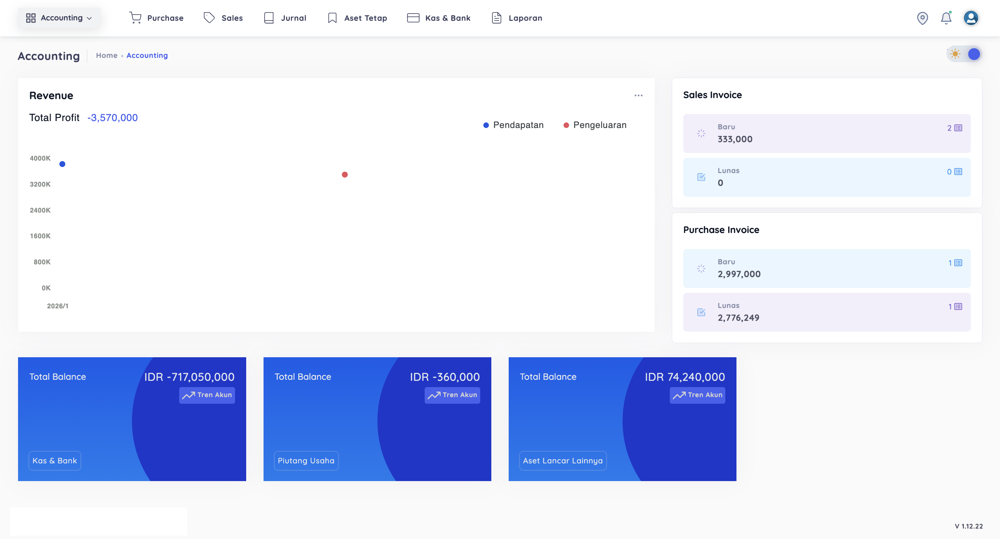
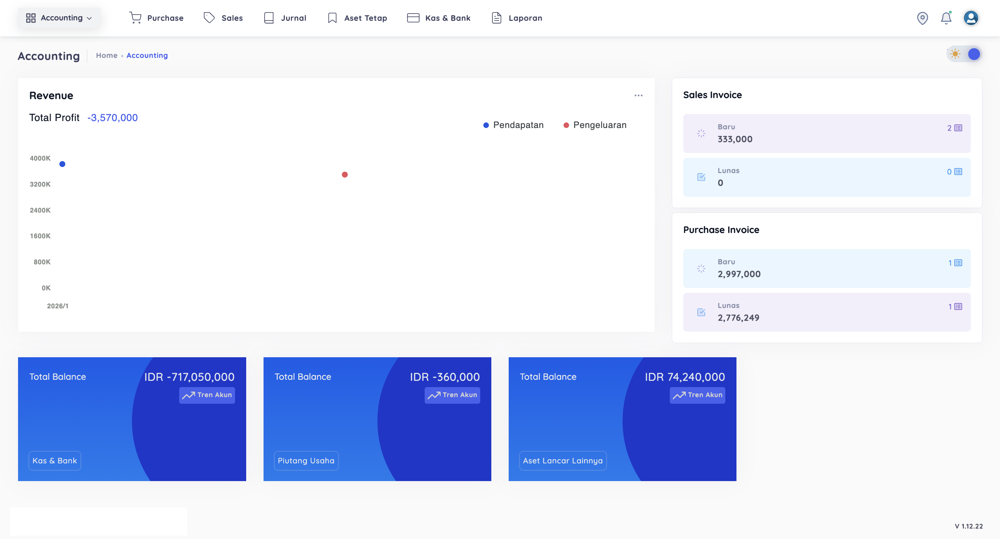

Enterprise Resource Planning (ERP) Integrasi dengan CEISA 4.0 Beacukai
ERP Merupakan sebuah sistem yang dirancang untuk memenuhi pencatatan dalam suatu perusahaan yang terakomodir menjadi satu sistem yang saling terhubung untuk sistem ERP yang saya kembangkan dan pelihara meliputi beberapa fitur seperti Manajemen Gudang, Produksi, PPIC, Accounting, Marketing & Sales, Purchasing, Pengurusan Dokumen Ekspor Impor yang terintegrasi dengan pencatatan barang.
Website EarScope, Deteksi Penyakit Telinga Berbasis IoT
Website ini dikembangkan untuk Tugas Akhir saya yaitu membuat IoT tentang deteksi penyakit telinga, menggunakan Raspberry Pi dan kamera endoskopi, serta terintegrasi dengan website manajemen pasien yang membantu dokter dalam melihat hasil pemeriksaan dan riwayat pemeriksaan pasien.
Website Integrasi Image Processing with YOLOv8
Website ini dibuat menggunakan framework Flask Python dengan integrasi Socket IO python guna menangkap gambar secara langsung, serta meneruskan ke image processing untuk dideteksi
Website Integrasi Error & Issue with Sentry
Website ini dibuat menggunakan framework Vue JS sebagai Frontend dan Framework Laravel sebagai Backend, Project ini merupakan hasil magang Tim UNS di PT. GMEDIA Yogyakarta
Perancangan Website CMS Untuk Disdukcapil Kab. Sukoharjo
Website ini dibuat menggunakan framework Laravel dan Vue Livewire, website ini tersedia halaman admin untuk mengatur content yang akan ditampilkan ke halaman utama website Disdukcapil Kab. Sukoharjo